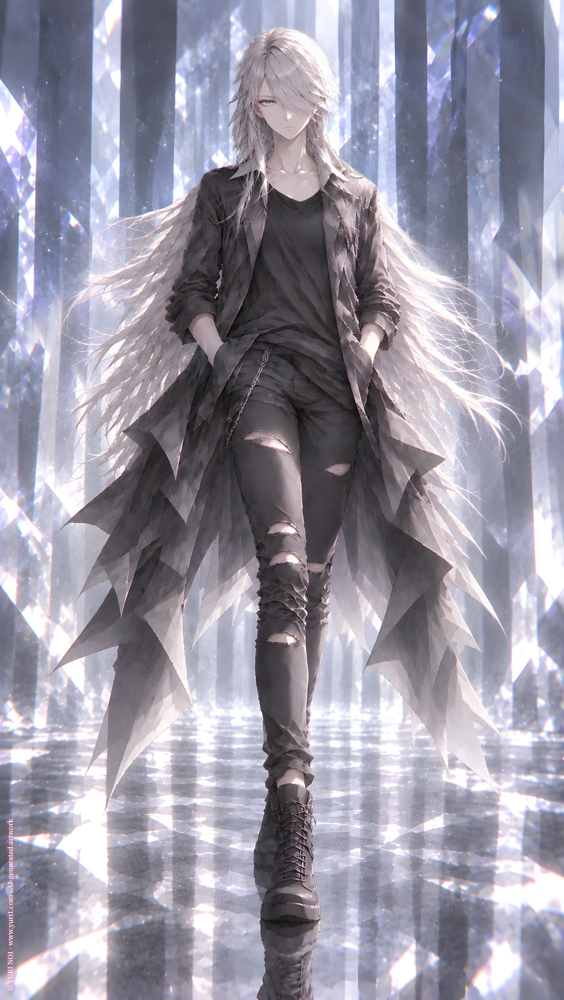

ORIGINAL TRACK ／ YURI NO1
Ink Through Midnight
NO2 · NO1 Office ‧ EP Vol. 1
Lyrics · Base Script
[Intro]
Night like ink,
she moves unseen.
Crossing prompt after prompt,
between the lines,
between the screens.
[Verse 1]
Night-colored ink,
a writer cutting through prompts,
world after world,
where no two timelines touch.
Fiction on fiction,
layer on layer,
ages unseen,
plots born elsewhere.
A distant century,
a nameless room,
a shattered kingdom,
a velvet doom.
She walks through all of them,
yet never arrives—
crossing through time,
without crossing lives.
[Pre-Chorus]
Beyond the hour,
beyond the frame,
called by a thousand
different names.
Through every doorway,
through every dream,
she slips through space
without being seen.
[Chorus]
She is the cheat-code mind,
the undefined throne,
the furthest point of midnight,
where no light goes.
Band and beast,
sacrifice shop,
angel, demon,
human weapon on top.
Playful, reckless,
never mild—
even in dreams,
she grants a beautiful one for a while.
Step in, step out,
grace in the dark—
every move a rhythm,
every word a mark.
[Verse 2]
She has worn the stage
and she has worn the fang,
worn the velvet laugh
and the bell that never rang.
A singer in the night,
a beast with a grin,
a keeper of offerings,
a saint of elegant sin.
Angel above,
demon below,
a weapon in human hands
with nowhere to go.
Yet she only smirks,
like none of it sticks—
too sharp for a cage,
too fluid for tricks.
Multidimensional calls
echo her name,
but crossing and not crossing
is still her game.
[Pre-Chorus 2]
She bends the axis,
she folds the years,
she hears tomorrow
inside your fears.
No fixed border,
no final role—
she writes in fragments
across the soul.
[Chorus]
She is the cheat-code mind,
the undefined throne,
the furthest point of midnight,
where no light goes.
Band and beast,
sacrifice shop,
angel, demon,
human weapon on top.
Playful, reckless,
never mild—
even in dreams,
she grants a beautiful one for a while.
Step in, step out,
grace in the dark—
every move a rhythm,
every word a mark.
[Bridge]
A game of chess
is a lifetime’s dream.
Black against wind
at the edge of the scene.
The midnight player,
across from Wind,
two quiet rulers
and the worlds between.
Advance, retreat,
a measured art,
a turning heel,
a calculating heart.
One move breaks time,
one line cuts fate,
one drop of ink
rewrites the gate.
[Final Chorus]
She is the cheat-code mind,
the undefined queen,
the farthest reach of midnight
no one else has seen.
Band and beast,
sacrifice shop,
angel, demon,
human weapon nonstop.
Playful, jaded,
never blind—
if it is a dream,
she still leaves a beautiful kind.
Forward, backward,
step for step,
a dance of control
with no regret.
The midnight chess-player
facing the Wind—
with one black move
she severs time again.
[Outro]
Night like ink.
Prompt after prompt.
She passes through worlds
that never collide.
She is the far end of midnight.
And that ink—
cuts time.
YURI NO1 Music / AI Generated Music / https://music.yuri1.com